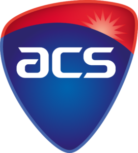

Speak With a Local Team Member
Share what’s happened – no technical knowledge required.
Your local scam recovery partner, helping you reclaim your peace of mind.
If you’ve been targeted by a scam, it can be hard to know what to do or who to trust. You are not alone – many Tasmanians have faced similar situations. Tassie Tech is here to help you take steps to recover your funds and secure your accounts, with straightforward advice and friendly support.
We understand how confusing and frustrating scams can be. Our team is here to provide clear, honest guidance so you can start moving forward quickly and safely. Here’s what we’ll do:
Share what’s happened – no technical knowledge required.
We’ll outline the next steps and help you take action right away.
We help you protect your information and avoid future scams.
Tassie Tech is based right here in Tasmania. Our team has years of experience helping locals recover from scams and secure their accounts. We never ask for upfront payments or make unrealistic promises. Just honest, practical help from people you can trust. We explain everything clearly and always respect your privacy.
Don’t let a scam define your future. Get the support you need to move forward quickly and confidently.
We aim to be a vital part of our local business community.

Australian Computer SocietyWe are a member of the ACS, supporting their aim to develop the continued effectiveness and ethics of Australian IT.Let Tassie Tech guide you through scam recovery with care and expertise. Book a consultation call today and take the first step toward feeling secure again.